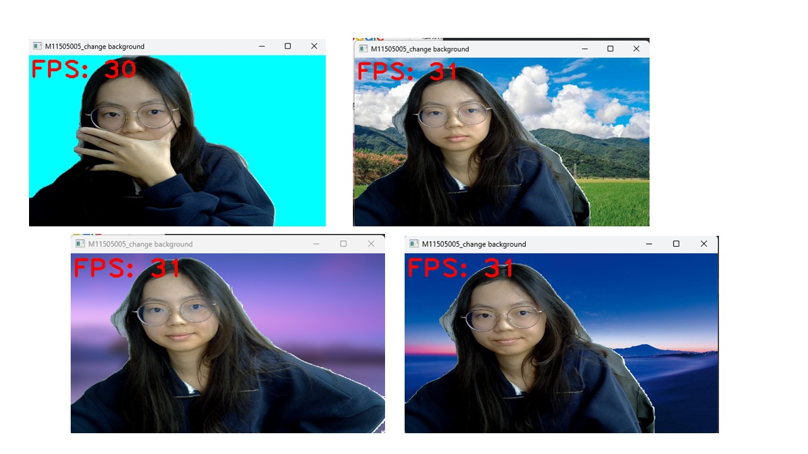

AI04X
SelfieSegmentation 背景應用整合展示
用 MediaPipe 的人像分割做即時背景替換，含三種變化。
功能簡介
本作品運用 MediaPipe 的 SelfieSegmentation 模組，實作出即時攝影人像分割效果。包含三種變化：黑色背景遮罩、雙背景切換，與可自訂背景色彩或模糊程度，並動態顯示 FPS 效能資訊。
成果展示

程式碼片段
AI041｜即時人像去背
import cv2
import numpy as np
import mediapipe as mp
selfie_segmentation = mp.solutions.selfie_segmentation.SelfieSegmentation(0)
bgb = np.zeros([300, 520, 3], np.uint8)
cap = cv2.VideoCapture(0)
while cap.isOpened():
success, image = cap.read()
img = cv2.resize(image,(520,300))
imgrgb = cv2.cvtColor(img, cv2.COLOR_BGR2RGB)
results = selfie_segmentation.process(imgrgb)
condition = np.stack((results.segmentation_mask,) * 3, axis=-1) > 0.1
output_image = np.where(condition, img, bgb)
cv2.imshow('original', img)
cv2.imshow('segmentation_black', output_image)
if cv2.waitKey(5) & 0xFF == 27:
break
cap.release()
cv2.destroyAllWindows()AI042｜雙背景切換版
import cv2
import numpy as np
import mediapipe as mp
selfie_segmentation = mp.solutions.selfie_segmentation.SelfieSegmentation(0)
bgb = np.zeros([300, 520, 3], np.uint8)
bgc = cv2.imread('pic/bgc.jpg')
cap = cv2.VideoCapture(0)
while cap.isOpened():
success, image = cap.read()
img = cv2.resize(image,(520,300))
results = selfie_segmentation.process(img)
condition = np.stack((results.segmentation_mask,) * 3, axis=-1) > 0.1
output_image = np.where(condition, img, bgb)
output_image2 = np.where(condition, img, bgc)
cv2.imshow('original', img)
cv2.imshow('segmentation_black', output_image)
cv2.imshow('segmentation_color', output_image2)
if cv2.waitKey(5) & 0xFF == 27:
break
cap.release()
destroyAllWindows()AI043｜可切換背景 + FPS 版
import cv2
import numpy as np
import mediapipe as mp
import time
blur=0
prev_time = 0
bg_image = None
BG_COLOR = (255, 255, 0)
selfie_segmentation = mp.solutions.selfie_segmentation.SelfieSegmentation(0)
cap = cv2.VideoCapture(0)
while cap.isOpened():
success, image = cap.read()
img = cv2.resize(image,(520,300))
imgrgb = cv2.cvtColor(img, cv2.COLOR_BGR2RGB)
results = selfie_segmentation.process(imgrgb)
condition = np.stack((results.segmentation_mask,) * 3, axis=-1) > 0.1
if bg_image is None:
bg_image = np.zeros([300,520,3], np.uint8)
bg_image[:] = BG_COLOR
else:
bg_image = cv2.resize(bg_image, (520,300))
if blur > 0:
bg_image = cv2.GaussianBlur(bg_image, (55, 55), 0)
blur = 0
output_image = np.where(condition, img, bg_image)
cv2.putText(output_image, f'FPS: {int(1 / (time.time() - prev_time))}', (3, 40), cv2.FONT_HERSHEY_PLAIN, 3, (0, 0, 255), 3)
prev_time = time.time()
cv2.imshow("change background", output_image)
keyb = cv2.waitKey(1) & 0xFF
if keyb == 27:
break
elif keyb == ord('0'):
bg_image = None
elif keyb == ord('1'):
blur = 1